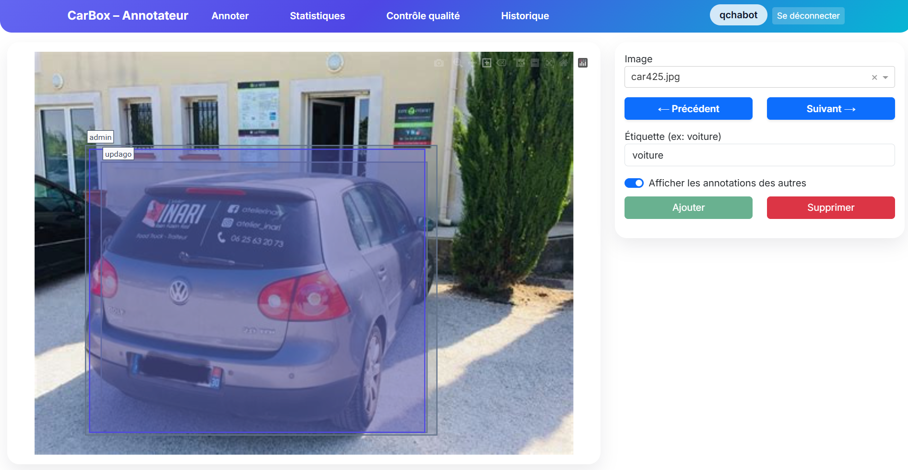

Construction d'une application d'annotation.
Cette application consiste à pouvoir annoter des images de voitures afin d'identifier précisément où se situe le véhicule sur l'image. Pour réaliser cette application, nous devions utiliser le framework Python Dash. Notre application possède différentes pages :
- La première page permet d'annoter les images. En haut à droite, nous avons la possibilité de choisir l'image que l'on souhaite annoter (soit directement via
une liste déroulante, soit avec les boutons "Suivant" et "Précédent"). Ensuite, nous avons la possibilité de mettre une étiquette (un nom) à l'annotation. Enfin,
l'utilisateur peut voir les annotations faites par d'autres utilisateurs grâce au curseur.
- La deuxième page contient les statistiques. Nous pouvons filtrer par utilisateurs et par dates. En dessous, nous retrouvons différents indicateurs ("Images
totales", "Images annotées", "Total d'annotations" et "Annotateurs"), suivis de trois graphiques ("Annotations par personne", "Top images", "IoU moyen par
image")
- La troisième page correspond au contrôle qualité des annotations. Notre contrôle qualité utilise la méthode de l'IoU (Intersection over Union), soit le
chevauchement. Cette technique permet de calculer à quel point deux boîtes englobantes se recouvrent l’une l’autre : plus l'IoU est élevé, plus la qualité est
bonne. À l'inverse, quand un IoU est faible, cela peut révéler une erreur d'annotation ; par conséquent, nous retournons le nom de l'utilisateur qui aurait fait une
mauvaise annotation.
- La quatrième page est l'historique. Elle permet de voir les dernières connexions, annotations et suppressions d'annotations.
- Présentation de l'outil développé
- Qualité des commentaires et de la présentation
- Utilisation de la technologie Dash
- Créativité dans la recherche d'une nouvelle idée (le contrôle qualité)
- Apprendre à utiliser la technologie Dash
Ce projet m'a permis de découvrir la technologie Dash pour créer une application web.
Voir l'application